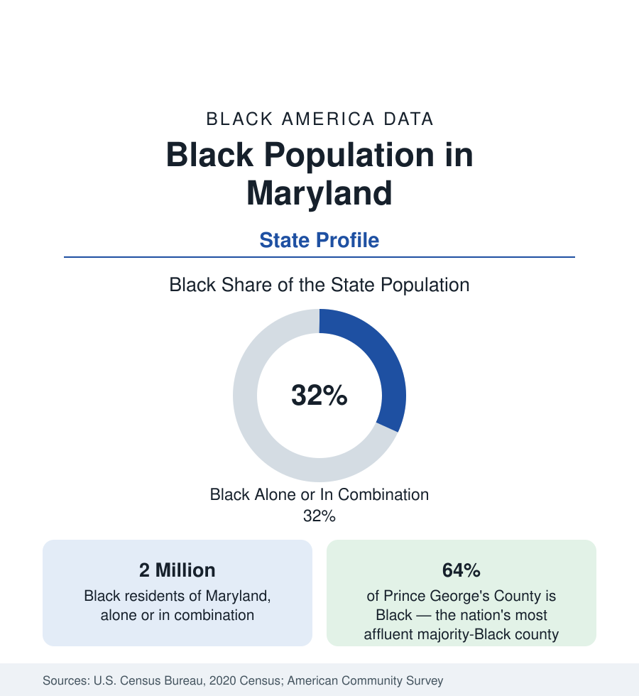

Black Census
Black Population in Maryland: The Northernmost Southern State
About 2 million Black Marylanders — nearly one in three residents, the highest share outside the Deep South — from Baltimore to Prince George's County. The census profile.

Maryland holds about 2 million Black residents — Black alone or in combination — nearly one in three of its people, with Black alone at about 1.82 million, or 29.5 percent. That is the highest Black population share of any state outside the Deep South, and Maryland's Black population is among the most affluent in the nation: its signature jurisdiction, Prince George's County, is the wealthiest majority-Black county in America, its capital city region is Baltimore, and its suburbs feed the federal economy. This article profiles the population in the census data.
Prince George's County: The Signature Jurisdiction
Prince George's County, adjoining Washington on its east, holds roughly 580,000 Black residents — about 64 percent of its 967,000 people — the largest majority-Black county population in the nation. Its data break the reference's usual associations: median Black household income in the county has run at or above the national median for all households, homeownership is high, and its subdivisions — Bowie, Upper Marlboro, Fort Washington, Mitchellville, Woodmore — contain some of the most affluent Black neighborhoods in the United States, built across two generations by the federal workforce the Washington profile documents. The county is the suburban Black America's flagship jurisdiction, and its statistics anchor the optimistic end of nearly every distribution in this reference.
Baltimore and the Center
Baltimore, profiled in the cities section, holds the state's second concentration: a city roughly three-fifths Black, some 350,000 people, with the state's most difficult urban indicators standing in permanent contrast to Prince George's, ninety minutes apart. Between and around them: Montgomery County, the wealthy Washington suburb, holds a Black population of about 210,000 — roughly a fifth of the county, in communities from Silver Spring's diverse corridors to the upcounty — and Howard County's Columbia, the planned city, is roughly a fifth Black with among the strongest school and income data in the state. Anne Arundel (Annapolis) and Baltimore County record Black shares in the range of a sixth to a fifth, the latter's Black population suburbanizing steadily on the city's northwest and east.
The Rest of Maryland
The state's Black geography thins beyond the Baltimore-Washington corridor but never vanishes. The Eastern Shore — across the Chesapeake Bay — holds old Black communities in its farm and seafood towns, with Somerset County (home to the University of Maryland Eastern Shore, an HBCU) at roughly two-fifths Black, the shore's highest share. Southern Maryland's Charles County has grown into a majority-minority suburban county with a Black population approaching two-fifths and the state's fastest Black growth. Western Maryland's counties record small shares. The state's four HBCUs — Morgan State (the largest, in Baltimore, with the state's biggest Black enrollment), Coppin State, Bowie State (the oldest HBCU in Maryland, in Prince George's County), and UMES — map exactly onto the population's centers.
Composition and Change
Maryland's Black population is the federal economy's demographic dividend: high public-sector and contractor employment, the nation's deepest Black professional class by share, and educational attainment at or above national Black averages by wide margins — Maryland's Black bachelor's attainment runs among the highest of any state. Its diversity is growing on the Washington pattern: one of the nation's largest African immigrant populations (Ethiopian and West African communities centered in Montgomery and Prince George's counties) and a substantial Caribbean community layer over the native-born base. The estimates show continued growth in the suburban counties and slow decline in Baltimore city, the share statewide holding near a third.
Reading the Maryland Numbers
The contrast is also generational in the data: Baltimore's Black population is the older of the two poles, its age structure weighted by out-migration of the young, while Prince George's records one of the youngest and most family-heavy Black suburban profiles in the nation — the state's future being written, demographically, in its suburbs.
Maryland is the state that proves the reference's central geographic argument from the positive side: put a Black population beside a stable, high-wage, credential-rewarding employment engine and its statistics transform within two generations. The state's two poles — Prince George's County and Baltimore — are the same population under different economic weather, and the county tables beneath this profile hold both, thirty miles and several income deciles apart.
More in Black Census
The Black Population of the United States: Size, Definitions, and Distribution
The Black population of the United States totals 52.8 million — 15.4 percent of the nation. How the Census Bureau defines and counts the population, and where it lives.
Black Median Household Income in the United States
Black median household income stands at $56,490 in the Census Bureau's annual income report — how the figure is measured, how it compares, and what drives it.
The Black Poverty Rate: Levels, Children, and the Long Trend
The official Black poverty rate is 17.1 percent — against 11.1 percent nationally and 7.7 percent for non-Hispanic White Americans. How poverty is measured and what the data show.
Source: U.S. Census Bureau, 2020 Census; American Community Survey; Population Estimates Program.